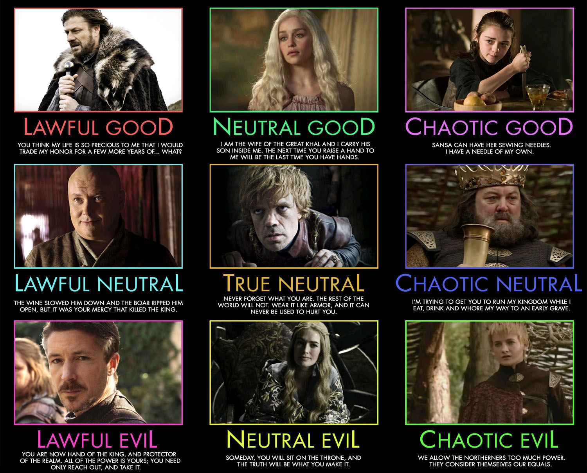

Règles principales
Il existe deux type de règles à suivre, celles valable pour l'ensemble de l'aventure, et celles qui régissent le combats.
Dans un premier temps, voyont les premieres:
Règles aventure
Caractéristiques
A - Les 6 Caractéristiques de Base
Pensez-y comme le "potentiel brut" de votre personnage, ses talents innés. Tout personnage est défini par 6 caractéristiques, qui ont un score (généralement entre 8 et 20) :
💪 Force (FOR) : La puissance physique.
- Utile pour : Frapper fort avec des armes lourdes (haches, épées à deux mains), défoncer des portes, escalader.
🤸 Dextérité (DEX) : L'agilité, les réflexes, la précision.
- Utile pour : Tirer à l'arc, esquiver, être discret, crocheter des serrures.
❤️ Constitution (CON) : L'endurance, la santé, la vitalité.
- Utile pour : Avoir plus de points de vie (survivre aux coups), résister au poison ou au froid.
🧠 Intelligence (INT) : La mémoire, le raisonnement, le savoir.
- Utile pour : Se souvenir d'informations sur l'histoire ou les monstres, comprendre la magie (pour les Magiciens), enquêter.
👁️ Sagesse (SAG) : L'intuition, la perception, la volonté.
- Utile pour : Remarquer des pièges ou des ennemis cachés, résister au contrôle mental, soigner (pour les Prêtres).
✨ Charisme (CHA) : La force de personnalité, l'éloquence, l'influence.
- Utile pour : Persuader, mentir, intimider, inspirer les autres (pour les Bardes ou les Sorciers).
Modificateur
B - Le "Bonus" de Caractéristique (Le Modificateur)
C'est là que ça devient important. Le score de caractéristique (ex: 16) n'est presque jamais utilisé. C'est son bonus, le "modificateur" qui compte.
C'est très simple :
- Un score de 10 est la moyenne humaine. Il donne un bonus de +0.
- Pour chaque 2 points au-dessus de 10, vous gagnez +1 en bonus.
- Pour chaque 2 points en-dessous de 10, vous prenez -1 en bonus
Exemple : Votre personnage a 16 en caractéristique Force. Il a donc un modificateur de Force de +3. C'est ce "+3" qu e vous ajouterez à vos jets de dé pour défoncer une porte.
Carac --> Modificateur
1 --> -5
2-3 --> -4
4-5 --> -3
6-7 --> -2
8-9 --> -1
9-10 --> +0
11-12 --> +1
13-14 --> +2
15-16 --> +3
17-18 --> +4
19-20 --> +5
Aptitudes
C -Les Aptitudes (Compétences) et le Bonus de Maîtrise
Les Aptidutes (ou Compétences) sont des applications spécifiques de vos Caractéristiques. Par exemple, "Athlétisme" est une compétence de Force. "Discrétion" est une compétence de Dextérité. "Persuasion" est une compétence de Charisme.
La liste des aptitudes [ici]... soon
Quand le MJ vous demande un "jet de Discrétion", vous lancez un d20 et vous ajoutez votre bonus de Dextérité.
Le Bonus de Maîtrise
Mais alors, qu'est-ce qui différencie un Voleur d'un Guerrier s'ils ont la même Dextérité ? La Maîtrise.
En créant votre personnage, vous choisissez des compétences que vous "maîtrisez". Cela signifie que vous y êtes spécialement entraîné.
- Le Bonus de Maîtrise est un bonus fixe qui dépend de votre niveau. Il commence à +2 au niveau 1.
- Si vous maîtrisez une compétence, vous ajoutez ce bonus en plus de votre bonus de caractéristique.
Example
D - Mise en Pratique : L'Exemple Complet
Imaginons deux personnages qui tentent d'être discrets (jet de Discrétion). Le MJ fixe la difficulté à 15.
Personnage A : Le Voleur (Niveau 1)
- Il a 16 caractéristique en Dextérité (Modificateur +3).
- Il maîtrise l'aptitude "Discrétion". Son Bonus de Maîtrise est de +2.
- Son jet total sera : d20 + 3 (Dextérité) + 2 (Maîtrise) = d20 + 5
Personnage B : Le Guerrier (Niveau 1)
- Il a 12 caractéristique en Dextérité (ModificateurBonus +1).
- Il ne maîtrise pas l'aptitude "Discrétion".
- Son jet total sera : d20 + 1 (Dextérité) = d20 + 1
Le Voleur a beaucoup plus de chances de réussir, car il est à la fois agile (Dextérité) et entraîné (Maîtrise).En résumé:
- Vos Caractéristique (ex: Dextérité 16) vous donnent un Bonus via le Modificateur (ex: +3).
- Vos Aptitudes (ex: Discrétion) sont liées à une Caractéristique.
- Si vous Maîtrisez cette compétence, vous ajoutez aussi votre Bonus de Maîtrise (ex: +2).
Règles principales
Il existe deux type de règles à suivre, celles valable pour l'ensemble de l'aventure, et celles qui régissent le combats.
voyont maintenant celles pour les combats
Règles combat
Concepts
Tour et initiative
Les personnages joueurs et non joueurs seont placé sur table en début de combat en respectant la situation qui sera établie avant le combat ( si vous attaquez furtivement ou en faisant bcp de bruit par exemple)
Ensuite ce sera une activation altérnée entre personnage joueur et non pnj.
Exemple: Deux 'héros' et trois gobelins. Les héros attaquent furtivement, ils ont donc l'initiative.
- Tour 1
- héro 1
- Gobelin 1
- héro 2
- Gobelin 2
- Gobelin 3
- Tour 2
- héro 1
- Gobelin 1
- héro 2
- Gobelin 2
- Gobelin 3
Actions lors de votre tour
Vous pouvez effectuer 3 Actions lors de votre tour
Ci-dessous la liste des actions possible:
- déplacement, notée en pouces "
- attaque / sorts
- se mettre à couvert
- charge ( déplacement )
- invente ton action !
Fiche personnage Combats
voir: Patron
Attaque
Example:
| Armes/Sorts/Techniques | Portée | Attaques | Effets / Description |
|---|---|---|---|
| Arc | 8" | 1" | Inflige 1 blessure, et diminue le mouvement de la cible de 2" |
- Portée: en pouces, distance à laquelle l'attaque / sort peut être lancer
- Attaques: nombre de d20 que l'attaque va utiliser
- Effets, beaucoup d'effet peuvent être imaginé
- repousse la cible de 2'' pour un coup de bouclier
- terrorise la cible, prochain tour elle est incapable d'effectuer une autre action qu'une fuite
Résolution
- A) Choix d'une action, on regarde si vous la portée est atteignable
- B) MJ fixe une difficultée, issue de vos caracteristiques et abilitée en comparaison de celle de la cibles
- C) Lance le nombre de d20 d'attaques. comparaison avec la difficultée
- D) On applique les effets si réussite
- E) Jet se sauvegarde pour savoir si blessure
- F) Si il y à une blessure, jet de bravoure, d20 doit être supérieur à votre bravoure.
Example
- Mise en Pratique :
Imaginons un personnage qui tire à l'arc sur un autre
Personnage A : Le Voleur (Niveau 1) Semi Elfe
- Il a 16 caractéristique en Dextérité (Modificateur +3).
- Il maîtrise l'aptitude "Maitrise de projectiles". Son Bonus de Maîtrise est de +2.
- Son jet total sera : d20 + 3 (Dextérité) + 2 (Maîtrise) = d20 + 5
Personnage B : Le Guerrier (Niveau 1)
- Il a 12 caractéristique en Constirution (ModificateurBonus +1).
- Il ne maîtrise pas l'aptitude "Esquive".
- Il porte une armure de plaque (sauvegarde 3+)
- Son jet total sera : d20 + 1 (Dextérité) = d20 + 1 + difficultée MJ
Le personnage B est au milieu d'un champs, il n'a donc aucun endroit pour se cacher, mais il y à un petit peu de vent, difficulté 3
attaquant: d20 + 3 (Dextérité) + 2 (Maîtrise) = d20 + 5 cible: d20 + 1 + 3
- Si l'attaque est une réussite: jet de sauvegarde ( bloque les blessures mais pas les effets)
- Si l'attaque est une réussite 1 blessure et 2" de moins pour la cible
- Si la sauvegarde est réussi, seulement 2" de moins pour la cible
- Jet de bravoure de la cible
Création personnage
Info
Race : Déterminera certaines de vos aptitudes
Classe : Déterminera certaines de vos aptitudes ainsi que sorts, armes ect...
Alignement : voir ici
Niveau : 1
Patron pour créer son personnage
NOM
VOUS AVEZ LE MARKDOWN A REMPLIR ICI
https://raw.githubusercontent.com/remifabas/jdr/refs/heads/main/src/pj/patron.md
YOUR NAME
Race :
Classe :
Alignement :
Niveau : 1
Description
COOL_STORY
Caractéristiques
Vous avez 60 points érépartir ( ou on fera lors de la premiere partie un jet d20 pour chaque caractéristique)
| Caractéristique | Valeur |
|---|---|
| 💪 Force (FOR): | 10 |
| 🤸 Dextérité (DEX): | 10 |
| ❤️ Constitution (CON): | 10 |
| 🧠 Intelligence (INT): | 10 |
| 👁️ Sagesse (SAG): | 10 |
| ✨ Charisme (CHA): | 10 |
Aptitudes aventure
à choisir, on pourra voir ensemble, essayer d'en inventer une
- TODO
- TODO
- TODO
descriptif d'une regle
Fiche combat / Profil
Mouvement: 6" (Humanoide 6", nain 5", Gnome 4", Monture 8" )
Sauvegarde: 5+ VOIR ARMURE # TODO à modif
Objets
- ARME (possibilitée d'en avoir plusieurs)
- ARMURE - à voir selon votre force
- leger +1'' mouvement -- sauvegarde 6+
- cuir sauvegarde 5+
- lourd -1'' mouvement -- sauvegarde 4+
- plaque -2'' mouvement -- sauvegarde 3+
N'Hésitez pas si vous voulez des règles particulieres on équilibrera ça correctement ensemble. Pour les combats ne pensez pas juste à des actions de types taper. Pensez à des actions de mouvements ( les votre ou même de la cible ) Pensez aussi à orienter votre type de personnage: support / soin / degats / tank
exemple: Charge: pousse votre adversaire ( si il est à coté d'un précipe il sera tué d'un seul coup) Crie de défi: force un adversaire ciblé à vous attaquer Sort d'entrave: mouvement de la ciblie diminué Jet de sable: +2 jet de touche de la cible
| Armes/Sorts/Techniques | Portée | Attaques | Effets / Description |
|---|---|---|---|
| Arc | 8" | 1" | Inflige 1 blessure, et diminue le mouvement de la cible de 2" |
| Épée | 1" | 2" | Inflige 1 blessure, et saignement |
| Boule de feu | 6" | 1" | Inflige 1 blessure en zone de 2" |
| Coup de bouclier | 4" | 1" | charge au maximum de 4" et repousse la cible de 2" |
| Provocation | 10" | 1" | La cible charge le lanceur de 3" |
Aptitudes combat
- TODO
descriptif d'une regle
Lors de votre aventure vous allez avoir de nouveaux objets / sorts / armes, la fiche évolura, gardez la simple au début
Alignement
L'alignement de votre personnage est une information qui vous servira à choisir les actions de votre personnage selon les situations.
L'alignement n'est pas une sorte de code de conduite strict, mais représente plutôt des principes généraux. Ainsi, un personnage loyal peut utiliser la ruse, un personnage bon peut être cupide ou orgueilleux. L'alignement est plutôt une aura que dégage le personnage, aura à laquelle sont sensibles certains êtres (dont les dieux), certains sorts et certains objets magiques...
C'est une composante sur deux axes:
- La loi
- L'éthique
Et voici une image pour comprendre rapidement:

Magtherai Isle
.svg)
Bienvenue à Magtherai, la Péninsule des Échos Brises
Ce n'est plus seulement une presqu'île ; c'est une poudrière où les anciennes gloires s'effondrent et où de nouveaux cauchemars tombent du ciel. C'est une terre de rois déchus, de nains obstinés et de marchands qui dansent sur des tombes, un lieu au bord du gouffre.
Au Nord : Le Trône Fébrile d'Embermoon
Au nord, la grande et fière cité d'Embermoon abrite le trône de la famille royale. Mais la couronne pèse lourd sur la tête du Roi Thol. C'est un homme bon, ou du moins l'était-il, mais il est aujourd'hui dépassé, s'accrochant à des traditions que le monde ignore déjà. Son pouvoir s'effrite comme de la vieille pierre.
Ses armées sont exsangues. La Guilde des Mages et les Guerriers de Magtherai sont les seuls remparts contre les vagues incessantes d'Orks, de Gobelins et, de plus en plus, de morts-vivants—des spectres et des squelettes qui semblent répondre à un nouvel appel.
Pendant que le Roi Thol regarde ses frontières brûler, la Guilde des Commerçants, basée dans le port en plein essor de Twilight Watch sur la côte ouest, prospère. Ils financent les mercenaires que le roi ne peut plus payer, achètent les nobles qu'il ne peut plus contrôler, et leur loyauté va à l'or, pas à la couronne.
Au Centre : Cel, le Cœur de Pierre
Si Embermoon est la tête, Cel est le cœur battant—et obstiné—de Magtherai. Cette antique cité-montagne est le véritable centre névralgique du royaume, non pas dirigée par des humains, mais gérée avec une poigne de fer par les grandes familles Naines.
Infatigables, les mineurs nains s'enfoncent plus profondément que jamais dans les racines de la terre. Ils ne cherchent pas seulement de l'or ou du fer ; ils traquent une légende, un espoir : le "Minerai des Dieux". Les chroniques Naines affirment que ce métal mythique, s'il était trouvé, pourrait reforger le destin, conférer une puissance divine, ou peut-être... attirer des choses qu'il vaudrait mieux laisser dormir.
Les Terres Sauvages : Entre Horreur et Chaos
Les cités ne sont que des îles de lumière dans un océan de ténèbres :
-
À l'Ouest de Cel, la Forêt d'Ironwood est un lieu maudit. Les arbres y poussent serrés, bloquant la lumière du soleil, et l'on murmure qu'un étrange culte y pratique des rituels pour "négocier" avec les ombres qui y résident.
-
Au Sud de Cel, les pics déchiquetés de Red Range résonnent des cris de guerre. C'est un champ de bataille permanent, le terrain de jeu de trolls brutaux et de tribus d'Orks qui ne s'accordent que sur une chose : leur haine de la civilisation.
-
À l'Extrême Sud, près de la ville portuaire de Dark Cove, la Forêt de Coldcore grouille de vie malveillante. C'est le domaine des Gnomes, des Lutins et des Gobelins, mais les véritables seigneurs des lieux sont les Araignées Géantes—des horreurs à huit pattes dont les chasseurs jurent qu'elles sont "plus hautes qu'un homme".
-
À l'Extrême Ouest, la ville de Lightmyst garde l'unique passage terrestre : les Palemarsh, des marais fétides et sans fin qui séparent Magtherai du grand continent.
-
Et puis, il y a l'Extrême Est. Ce n'est pas un territoire, c'est un tabou. Une ligne côtière nimbée de brumes d'où personne ne revient jamais. Les capitaines marchands, qui tracent leurs routes vitales entre Twilight Watch, Lightmyst, Dark Cove et Mordheim, connaissent la règle d'or : on navigue au large. Quelles que soient les tempêtes, on ne s'approche jamais de ces côtes maudites, et poser l'ancre y est impensable. Il vaut mieux affronter la mer déchaînée que de chercher refuge sur ces rivages, d'où seul le silence répond.
La Crise : Le Ciel Tombe
Mais le vrai drame ne vient pas des monstres habituels. Il tombe du ciel.
D'étranges météorites zèbrent la nuit, s'écrasant sur la péninsule dans un fracas de feu vert et violet. Ce ne sont pas de simples rochers ; ce sont des balises, des clés qui déchirent le voile de la réalité et ouvrent de nouveaux portails vers les Royaumes du Chaos.
Magtherai a toujours vécu avec des démons. Certains, anciens, piégés ici depuis des siècles, s'étaient même "adaptés", trouvant leur place dans les ombres de nos villes, tels des parasites tolérés. Mais ces nouveaux arrivants... ils ne sont pas amicaux point ainsi dire. Ils sont purs, affamés, et ils voient ce monde comme un festin qui leur est dû.
Votre Point de Départ : Mordheim, la Ville de la Comète
Et c'est là que vous entrez en jeu. Mordheim, la Cité des Marchands, au sud des montagnes Red Range. Autrefois connue pour son commerce, elle est aujourd'hui célèbre pour une chose : l'une de ces météorites s'y est écrasée.
Depuis, c'est la folie. On parle de mutations, de pierre qui rend fou, de pouvoir soudain, et d'une richesse inimaginable pour ceux qui osent s'approcher de l'épave céleste. C'est dans cette ville fiévreuse, où le chaos et l'opportunité marchent main dans la main, que votre aventure commence.
Mordheim

Mordheim, la Cité de l'Opportunité Fétide
N'approchez pas Mordheim en vous fiant au vent. L'odeur vous saisira bien avant la vue—un mélange complexe de poisson pourri, de sel marin, de brume industrielle, d'égouts à ciel ouvert et, depuis peu, d'une note âcre d'ozone et de pierre brûlée.
Bienvenue à Mordheim, la "Cité des Marchands". C'est un titre poli pour ce qui est, en réalité, un furoncle commercial sur la côte sud de Magtherai.
La Ville qui "Fonctionne"
Mordheim n'a pas de "gouvernement", elle a un Conseil de la Guilde des Commerçants. Le Maître-Marchand qui la dirige ne se soucie pas de la moralité, de la loi ou de la justice. Il ne se soucie que d'une seule chose : le flux ininterrompu du commerce.
Tout, à Mordheim, est guildé. Absolument tout.
Vous voulez voler quelqu'un ? Adressez-vous à la Guilde des Voleurs. Ils vous remettront un reçu pour vos cotisations et un formulaire à faire signer par votre victime (si vous êtes poli) pour prouver que le vol a bien eu lieu. Vous cherchez des bras cassés ? La Guilde des Mercenaires (où votre équipe vous attend probablement) a des bureaux près des quais, juste à côté de la Guilde des Assassins, qui coûte plus cher mais offre un service plus propre. Il y a même une Guilde des Mendiants qui s'assure que personne ne mendie sans licence dans les "beaux" quartiers, ce qui nuirait au tourisme.
Le crime n'est pas illégal à Mordheim ; c'est juste une autre forme de commerce organisé.
Le Fleuve Morr et le "Cratère"
La ville est coupée en deux par le fleuve Morr. C'est le fleuve le plus célèbre de la péninsule, principalement parce qu'on dit qu'il est trop épais pour s'y noyer, mais juste assez liquide pour s'y dissoudre. Des décennies de rejets industriels des tanneries et des alchimistes l'ont rendu presque solide.
Mais la véritable attraction, c'est "l'Étranger"—la météorite qui s'est écrasée il y a quelques mois.
Elle a anéanti un quartier entier, créant une nouvelle zone : le Cratère. C'est devenu le centre d'une nouvelle ruée vers l'or (ou plutôt, vers la "pierre étrange"). La Guilde des Commerçants a tenté de "réglementer" la zone, a échoué lamentablement, et se contente désormais de taxer lourdement tout ce qui en sort.
Le Cratère est une zone de non-droit où des "prospecteurs" fous, des cultistes, des démons et des aventuriers avides se battent pour des éclats de comète qui brillent d'une lumière malsaine.
Le Peuple : Un Chaudron Bouillonnant
Mordheim est un carrefour. Vous y croiserez :
-
Des Nains de Cel, venus vendre du matériel de minage de pointe (et hors de prix) aux prospecteurs du Cratère.
-
Des Gobelins et des Lutins de Coldcore, qui agissent comme guides dans les bas-fonds ou vendent des "antidotes" douteux contre les radiations de la pierre.
-
Des Orks et des Trolls de Red Range, employés comme gardes du corps, videurs ou "collecteurs de dettes" par les différentes guildes.
-
Et bien sûr, des humains de tout le continent, attirés par l'odeur de l'argent facile et du danger.
Depuis la chute de la comète, on voit aussi... autre chose. Des gens qui ont passé trop de temps près du Cratère, dont la peau brille, ou qui ont un membre en trop. La plupart des habitants font semblant de ne pas les voir. Après tout, s'ils paient leurs taxes, ce sont des citoyens comme les autres.
Car au final, c'est cela, Mordheim : un cloaque, certes, mais un cloaque riche. Pour ceux qui sont assez malins pour comprendre que la "loi" n'est qu'une suggestion des Guildes (et surtout, une taxe), la ville est une véritable mine d'or. Et l'arrivée de "l'Étranger" est une bénédiction pour les gens de cet acabit. Tout ce chaos, ces émeutes pour des cailloux lumineux et ces rumeurs de monstres, offre les meilleures diversions possibles. Pendant que toute la ville a les yeux rivés sur le Cratère, les vrais professionnels ont le champ libre pour s'occuper des affaires vraiment importantes...
Personnage Joueurs
Liste des joueurs
Lustina
🎭 Lustina “Verre-Fendu” Belphégora
Race : Tieffeline (ou Diablesse, selon l’univers)
Classe : Barde du Collège de l’Ivresse (classe personnalisée)
Alignement : Chaotique Bon
Niveau : 1
Description
😍 Traits de personnalité
Amoureuse compulsive : s’attache à tout (personne ou chose).
Alcoolique attendrissante : jure d’arrêter chaque matin, rechute à midi.
Chaleur démoniaque : impossible à détester, même en enfer.
⚡ Répliques emblématiques
« L’eau, c’est juste du vin qui a raté sa carrière ! »
« Si je tombe, c’est que la Terre m’embrasse ! »
« Attention ! J’ai un sort de charme de masse… ça s’appelle la tournée générale ! »
🩸 Origine de “Verre-Fendu”
Rejetée des Enfers après avoir fêlé la coupe indestructible d’un prince-démon, Lustina erre désormais dans les tavernes du monde mortel, entre concours d’alcool, romances maudites et chants enflammés. Sa légende dit que le verre du prince résonne encore de son rire ivre à chaque toast. 🍷
Quand tu aura lu la premiere partie et l'univers rajoute moi du contexte
Caractéristiques
Les maths sont pas bon ! 60 pts max
| Caractéristique | Valeur |
|---|---|
| 💪 Force (FOR): | 10 +0 |
| 🤸 Dextérité (DEX): | 12 +1 |
| ❤️ Constitution (CON): | 16 +3 |
| 🧠 Intelligence (INT): | 11 +0 |
| 👁️ Sagesse (SAG): | 8 -1 |
| ✨ Charisme (CHA): | 18 +4 |
Aptitudes aventure
🎶 Performance (CHA) → Elle charme, chante et fait danser les tavernes.
🍷 Persuasion (CHA) → Rien ne résiste à sa chaleur démoniaque.
🧠 Arcane / Connaissance des boissons (INT) → Elle sait reconnaître la magie… ou le bon vin.
💃 Acrobaties (DEX) → Pour ses danses ivres et ses chutes gracieuses.
Fiche combat / Profil
- Mouvement: 6'' car tu porte un tonneau
- Sauvegarde: 6+, t'as lair d'avoir que du tissue
- Bravoure: 6 ( j'ai oublié dexpliqer cette partie plus c'est bas mieux c'est !) comme t'as bcp de - charisme je te met une bonne valeur
- Blessures: 5, bcp de pts de vie les démons c'est solide et comme t'as pas bcp de sauvegarde
Objets
te faudra un descriptif de quelques objets en combat
| Armes/Sorts/Techniques | Portée | Attaques | Effets / Description |
|---|---|---|---|
| Aura d’Ivresse (passif) | / | / | Toute créature +2 score de succès jet de touche mais Lustina n'a pas de sauvegarde d'armure |
| Baiser Ardent | 4" | 2" | Régènere 1 blessure à la cible |
| agie du Tonneau | 6" | 1" | voir règles: Magie du Tonneau |
| Table d’Ivresse(passif) | / | / | voir règles: Table d’Ivresse |
une petite attaque en plus peut être ? ou un truc de support ?
- Magie du Tonneau (1/jour) → Peut transformer n’importe quel liquide en alcool fort. Effets RP ou mécaniques selon la situation :
| Liquide | Effet |
|---|---|
| Eau bénite | vin chaud (+1 attaque pour la prochaine attaque de la cible) |
| Potion | rhum (effet inchangé, mais goûté) |
| Soupe | bière épaisse (-1 score sauvegarde de la cible) |
- Poésie Incontrôlable (réaction) → Quand Lustina rate un jet, elle déclame un vers inspiré ; un allié proche gagne l’avantage sur son prochain jet.
🍾 Table d’Ivresse (option RP, 1d6 quand elle boit trop)
| Valeur | Effet |
|---|---|
| 1 | Pleure du vin chaud épicé. |
| 2 | Câline avec des flammes-couvertures. |
| 3 | Lance une chanson paillarde qui contamine tout le monde. |
| 4 | Séduit accidentellement un objet. |
| 5 | Transforme tout liquide en alcool. |
| 6 | Déclare son amour éternel à la première chose qu’elle voit. |
Krock
Race : Nain Classe : Moine — Voie du Diamant Éveillé Alignement : Lawful evil Niveau : 1
Prequel
Krock est un nain moine errant au style samuraï, vêtu d’une armure en cuir épais, les poils et les yeux d’un bleu minéral pâle. Il manie un katana démesuré qu’il porte dans le dos, plus grand que lui, symbole d’un passé de violence et d’un présent de discipline.
Né dans les forges des profondeurs de Cel, Krock fut émerveillé dès l’enfance par l’éclat des gemmes et le chant du métal précieux. Bercé par les légendes sur le minerai des dieux, sa passion devint une obsession qui le dévora jusqu'à ses 120 ans. Il officiait alors en tant que forgeron et toute sortes de gemmes et de métaux lui passait entre les mains. Malheureusement rien n'égalait les mythes et légendes qui courraient dans les mines.
C'est alors qu'il rencontra son vieux Maître, Hakarō, un moine humain aveugle venu faire aiguiser des sabres usés par le temps et la rouille. Krock se moqua du vieil homme et de ses armes en lui proposant des épées neuves et dignes du minerai des dieux (profitant de la cécité du vieillard pour les lui proposer au double du prix réel). Le moine posa alors sa main sur le plus vieux sabre qu'il avait amené et en un battement de cil l'épée tendue fièrement par Krock se brisa nette entre ses mains d'une coupure fumante et rougeoyante. Le maître qui avait ressenti l'obstination du forgeron lui avait fait comprendre la futilité de ses efforts face à une volonté et un esprit débarassé de tout désir. A la recherche d'un apprenti il lui proposa alors de lui enseigner l’art du sabre comme chemin spirituel s'il voulait vraiment atteindre son but et approcher la perfection des dieux. Subjugué par cette rencontre Krock abandonna alors son foyer pour suivre son maître dans le dur chemin qu'il lui proposait. Hakarō avait volontairement abandonné sa vue pour s'adonner à son art, Krock devait donc lui aussi choisir d'abandonner une part de lui-même. Il fit alors vœu de pauvreté devant Dornir le Pur: renoncer à tout bien matériel pour atteindre l’illumination.
Son serment fut accepté… mais mis à l’épreuve. Chaque fois qu’il cède à l’appel de la richesse, la montagne elle-même le punit : le diamant pousse sur sa chair, embellissant son corps tout en l’emprisonnant dans la pierre. S’il laissait son corps se couvrir entièrement, il deviendrait un golem de diamant, éternel gardien des trésors qu’il n’aurait jamais possédés.
Après un entrainement long et éprouvant auprès du sévère Hakarō, Krock erre, se battant pour purifier son âme et atteindre son but ultime tout en luttant physiquement contre l’or et autres richesses qui le fascinent. Chaque don ou renoncement sincère fissure la malédiction. Chaque trésor convoité l’alourdit un peu plus vers la perte de soi.
Caractéristiques
Vous avez 60 points érépartir ( ou on fera lors de la premiere partie un jet d20 pour chaque caractéristique)
| Caractéristique | Valeur |
|---|---|
| 💪 Force (FOR): | 14 |
| 🤸 Dextérité (DEX): | 10 |
| ❤️ Constitution (CON): | 12 |
| 🧠 Intelligence (INT): | 10 |
| 👁️ Sagesse (SAG): | 9 |
| ✨ Charisme (CHA): | 5 |
Aptitudes aventure
-
Echos de Cupidité : Krock peut sentir l’or proche et suivre sa direction avec une précision surnaturelle (avantage aux jets de perception liés aux richesses, mais +1 corruption si utilisé pour voler ou cacher un trésor).
-
Méditation de Diamant : 1× par repos long, il peut entrer en méditation 10 min pour durcir ou fissurer son corps: il fait avancer ou reculer sa malédiction (choix proposé par le mj selon ses actes récents ?).
-
Malédiction de diamant :
La corruption grandit ou recule selon les choix moraux liés à la richesse.
Chaque point de corruption donne +1 CON mais retire -1 DEX (ou alors -1 Sauvegarde et -1 mouvement ?)
+1 corruption pour : voler, cacher un trésor, négocier pour un bénéfice personnel, admirer trop longtemps un butin.
-1 corruption pour : faire un don, renoncer publiquement à une richesse, s’appauvrir volontairement, payer plus que nécessaire.
A 10 corruption : transformation définitive en Golem de Diamant -> à définir ce qui se passe (perte de controle totale du personnage) -> fonce vers la personne qui a le plus d'or
Fiche combat / Profil
Mouvement: 5"
Sauvegarde: 5+
Blessure: TBD
Objets
-
Arme : Ō-Katen no Krock (Énorme Katana ancestral, trop grand pour les humains normaux) largeur de lame incrustée d’un filon d’or qui pulse lorsqu’il cède à la cupidité (visuel)
-
Armure : Kimono Cuir Renforcé (armure cuir adaptée à son vœu : simple, sans dorures) Type cuir → sauvegarde 5+ Aucun or visible (condition pour éviter corruption passive)
-
Accessoire : Bourse-Serment Vide (autour du cou, jamais utilisée pour stocker)
-
Tonnelet de bière bénite : Une bière naine bénite par des années de prière. Pouvoir de guérison à déterminer
Aptitudes combat
| Armes/Sorts/Techniques | Portée | Attaques | Effets / Description |
|---|---|---|---|
| Ō-Katana | 2" | 2" | Inflige 1 blessure, +1 dgt lumière/3 niv corruption ?, repousse la cible de 2" |
| Main de Dornir | 1" | 1" | Frappe du diamant de ses poings. Effet percutant pour briser armure et obstacle (impossible si corruption < 3) |
| Sens du moine | 10" | S'immobilise pour entrer en transe et ressentir les auras autour de lui (impossible si corruption > 5). Donne de l'esquive aux alliés dans le rayon d'action. |
La corruption oriente les capacités de Krock. Moins il est corrumpu au plus il se rapproche du moine et est habile dans le maniement du sabre. Plus il est corrompu plus il se rapproche du Golem, perd en agilité mais développe des aptitudes liées à la roche.
ELARA
Race : Demi-Elfe
Classe : Chasseuse
Alignement : Neutre bon
Niveau : 1
Description
Elara est une silhouette d'une agilité frappante, son héritage demi-elfe lui conférant une grâce naturelle mêlée à la résilience humaine. Ses yeux vifs et pénétrants reflètent à la fois une détermination farouche et une créativité explosive. Elle porte le poids d'un passé mystérieux, cherchant sa place entre le monde des humains et celui des elfes. Son unique possession précieuse est son couteau double-lame, une extension de sa propre volonté, qu'elle manie avec une rapidité déconcertante.
Elle chevauche Lyra, un cerf géant majestueux aux bois immenses, qu'elle a trouvé blessé et soigné. Ce n'est pas une simple monture, mais un partenaire : ensemble, ils se déplacent comme une seule entité à travers les terrains les plus accidentés. Elara possède une connexion instinctive avec la faune et la nature, qu'elle canalise par des pouvoirs mystiques encore en éveil.
Caractéristiques
Les maths sont pas bon ! 60 pts max
| Caractéristique | Valeur |
|---|---|
| 💪 Force (FOR): | 8 |
| 🤸 Dextérité (DEX): | 16 |
| ❤️ Constitution (CON): | 12 |
| 🧠 Intelligence (INT): | 10 |
| 👁️ Sagesse (SAG): | 14 |
| ✨ Charisme (CHA): | 10 |
Aptitudes aventure
- **Sens Acérés
- Équitation Instinctive
- Pistage Silencieux
**Sens Acérés (Héritage Elfe)** : Grâce à votre ascendance elfique, vous possédez une ouïe et une vue exceptionnelles. Vous avez l'avantage sur les tests de Sagesse (Perception) pour détecter une menace cachée ou un piège.
**Équitation Instinctive** : Lorsque vous chevauchez Lyra, vous et votre cerf agissez comme une seule unité. Si Lyra doit effectuer un jet de sauvegarde, vous pouvez utiliser votre propre jet de Dextérité à la place. En cas de chute ou de désarçonnement, vous effectuez un jet de Dextérité pour vous rattraper.
**Pistage Silencieux** : Vous pouvez vous déplacer à travers les terrains naturels sans laisser de traces visibles et avez l'avantage sur les tests de Dextérité (Discrétion) lorsque vous vous déplacez lentement.
Fiche combat / Profil
Mouvement: 7'' (6'' de base + 1'' Armure Légère)
Sauvegarde: 6+ (Armure Légère)
Bravoure: 9
Blessures: 4
Objets
- ARME : Couteau Double Lame
- **ARMURE : Armure Légère
- Trousse de survie oui? elle fait quoi ?
- Selle et harnais pour Lyra oui? elle fait quoi ?
Aptitudes combat
| Armes/Sorts/Techniques | Portée | Attaques | Effets / Description |
|---|---|---|---|
| Couteau Double Lame | 1" | 2" | Inflige 1 blessure |
| Écho de Vitesse | 1" | / | +2" mouvement et +1 Sauvegarde |
| Écho de Stase* | 6" | / | Retire 2 action de la cible |
**Écho de Vitesse** : En canalisant l'énergie autour d'elle, Elara gagne +2'' en Mouvement et un avantage sur son prochain jet de Sauvegarde jusqu'à la fin du tour. Peut être utilisé une fois par combat. (Action de Mouvement)
**Écho de Stase** : Elara projette une vague d'énergie qui entrave la cible. La cible doit réussir un jet de Sagesse ou voir son Mouvement réduit de moitié et ne peut pas effectuer d'action de Charge ou de Courir lors de son prochain tour. (Action, 1 utilisation par combat)
🐴 Monture Spéciale : Lyra, le Cerf-Guerrier
La monture est si importante qu'elle devrait avoir des règles spéciales :
| Armes/Sorts/Techniques | Portée | Attaques | Effets / Description |
|---|---|---|---|
| Charge Cornue : | 1" | 1" | Inflige 1 blessure et repousse de 3" |
| Mouvement Silencieux : | 1" | / | Elara et Lyra deviennent inciblable pour 1 tour |
Soriel
Soriel, la Brûlée
Soriel Avenra, dite “la Brûlée”
Race : Humaine corrompue / Hôte infernale
Classe : Sorcière Pistolière (Ensorceleuse / Occultiste hybride)
Alignement : Chaotique Neutre
Niveau : 1
Description
Origines et chute Autrefois tireuse d'élite rattachée à la ville de Mordrheim, Soriel était une garde d'élite respectée, connue pour sa précision légendaire et son sang-froid imperturbable. Dans cette cité prospère, elle veillait depuis les tours de guet, protégeant les quartiers marchands et traquant les menaces dans les faubourgs. C'était une vie simple, honorable, avant que le ciel ne s'embrase. Lorsque le météore s'écrasa sur Mordrheim, la ville bascula dans le chaos. La pierre de malepierre corrompit tout ce qu'elle touchait, et dans son sillage, des brèches s'ouvrirent vers le Warp. Deux démons émergèrent des flammes et des décombres : un champion de Khorne, créature de rage et de carnage, et un horreur de Tzeentch, entité de mutation et de sorcellerie. Ensemble, ces incarnations de violence et de changement dévastaient les quartiers survivants. Soriel, refusant d'abandonner sa cité mourante, s'allia à Malthus, un mage désespéré qui tentait de sauver ce qui pouvait l'être. Ensemble, ils affrontèrent les deux démons dans les ruines encore fumantes de la cathédrale. Le combat fut brutal, mais Malthus parvint à entamer un rituel de bannissement, un sort d'une puissance terrible censé renvoyer les créatures dans le Warp. Le sort dérapa. Peut-être était-ce la corruption ambiante de la malepierre, peut-être l'interférence des énergies démoniaques, ou simplement le désespoir du mage. Le rituel, au lieu de bannir les démons, les lia pour toujours au corps de Soriel, fusionnant les trois essences en une seule entité. Malthus périt sur le coup, consumé par le contrecoup magique. Soriel hurla alors que deux présences alien s'enracinaient dans son âme.
La fusion maudite Désormais, Soriel partage son existence avec deux entités démoniaques aux natures diamétralement opposées : Kha'zar, l'Écorcheur de Khorne : Une essence de rage pure, de soif de sang et de violence déchaînée. Il la pousse au combat, amplifie sa force, hurle pour qu'elle massacre sans discernement. Dans les moments de colère, sa voix résonne comme un grondement de forge infernale. Tze'rathis, le Tisserand de Tzeentch : Une conscience manipulatrice, murmurant des plans complexes, des tentations de pouvoir arcane et de transformation. Il offre la ruse, la magie, mais aussi la corruption insidieuse. Sa voix est un sifflement séducteur, promettant toujours "un meilleur moyen". Les deux démons se détestent autant qu'ils la détestent, créant un tumulte constant dans son esprit. Soriel doit constamment arbitrer entre la fureur de Kha'zar et les manipulations de Tze'rathis, tout en préservant ce qui reste de son humanité.
Transformation physique L'incident laissa des marques indélébiles. Son apparence fut mutée par la double présence démoniaque, quatre bras musclés émergèrent de son torse, des ailes membraneuses se déployèrent dans son dos, et sa chevelure se transforma en serpents vivants qui sifflent ses émotions. Des yeux hétérochromes, l'un rouge ardent, l'autre d'un bleu changeant aux profondeurs hypnotiques et parcourant sa peau, des motifs de brûlures rituelles luminescents lorsque les démons s'agitent en elle.
Elle incarne physiquement l'impossible fusion de la rage et du changement, du sang et de la sorcellerie.
Mordrheim et le bannissement Mordrheim, déjà dévastée par le météore, acheva de sombrer dans la folie. Les survivants, voyant ce que Soriel était devenue, la déclarèrent morte avec tous les autres. Certains prétendent l'avoir vue s'enfoncer dans les ruines les plus profondes, d'autres qu'elle fut consumée par les flammes démoniaques. La vérité est plus cruelle : elle fut chassée, lapidée, maudite par ceux qu'elle avait tenté de sauver. Les autorités impériales qui arrivèrent pour "contenir" Mordrheim la classèrent comme une corruption à éradiquer. Officiellement morte, officieusement traquée, Soriel devint une fantôme.
Vie d'errance Depuis, Soriel évite les grandes cités où les autorités pourraient la reconnaître ou où sa nature attirerait chasseurs de sorcières, répurgateurs et fanatiques. Elle se cantonne aux marges de la civilisation : villages frontaliers oubliés des cartes, comptoirs de contrebandiers perdus dans les Terres Sombres, campements de réfugiés de Mordrheim dispersés, cités-ruines où la loi n'est qu'un vague conseil sur la manière de se tenir. Dans ces lieux sans foi ni loi, elle est devenue une légende contradictoire : certains la voient comme une protectrice féroce qui traque les créatures du Chaos, d'autres comme un monstre à éviter à tout prix. La vérité se situe entre les deux. Elle revient parfois dans les ruines de Mordrheim, cette cité-tombeau qui l'a forgée et maudite. C'est le seul endroit où elle se sent... chez elle, *parmi les décombres et les damnés qui y rôdent encore, cherchant de la malepierre ou simplement un sens à leur survie. La cohabitation impossible "Les démon ne m'ont pas volé mon âme. Il m'a juste appris à la partager." Sauf que Soriel partage avec deux démons qui se haïssent mutuellement. Chaque décision est un débat à trois voix :
Kha'zar exige la violence directe, le combat honorable, le sang Tze'rathis propose la manipulation, la magie, les plans tortueux Soriel tente de préserver sa moralité, sa stratégie, son humanité
Certains jours, elle ne sait plus où elle finit et où les démons commencent. Parfois, elle utilise leur pouvoir : la force surhumaine de Khorne pour protéger les innocents, la sorcellerie de Tzeentch pour déjouer les pièges. Mais chaque usage érode un peu plus sa volonté. Les rares personnes qui l'ont entendue parler seule savent qu'elle argumente constamment, négociant avec des voix que personne d'autre ne perçoit.
Quête désespérée Mi-chasseuse de démons, mi-fugitive, Soriel erre dans les ruines et les terres maudites, traquant les entités du Chaos qui menacent les innocents. Chaque démon qu'elle détruit est une façon d'expier, une preuve qu'elle n'est pas devenue le monstre que tous croient. Ironiquement, elle utilise souvent le pouvoir de Kha'zar et Tze'rathis pour accomplir ces actes - combattant le Chaos avec le Chaos lui-même. Mais son véritable objectif est de briser le pacte qui la lie aux deux démons sans y laisser son âme ou sa vie. Elle recherche des grimoires interdits, consulte des sorciers parias (qui la fuient souvent horrifiés), explore les ruines de Mordrheim et d'autres sites corrompus, espérant trouver un rituel, une relique, un savoir perdu qui pourrait défaire ce que Malthus a créé. Elle cherche aussi des traces du mage mort, espérant que dans ses notes ou son laboratoire détruit se trouve la clé de sa libération. Chaque piste la mène plus profond dans les ténèbres, et elle se demande parfois si la séparation est même possible - ou si les trois sont désormais un seul être.
Personnalité actuelle Sous les mutations et la double malédiction, Soriel conserve des fragments de qui elle était : disciplinée, stratégique, protectrice des faibles. Mais des années d'isolement et la présence constante de Kha'zar et Tze'rathis l'ont profondément changée. Elle est devenue cynique, méfiante, prompte à une violence qu'elle déteste mais ne peut réprimer totalement. Son humour est noir et mordant, ses rares moments de tendresse sont maladroits. Elle parle parfois à voix haute, argumentant avec des interlocuteurs invisibles, ce qui effraie ceux qui l'observent. Elle garde précieusement quelques objets de son ancienne vie :
Son pistolet de précision gravé du blason de Mordrheim (qu'elle utilise avec une cadence dévastatrice grâce à ses quatre bras) Une médaille de service tachée de sang séché, qu'elle ne porte plus Un morceau de pierre brûlée de la cathédrale où elle fut maudite Le bâton brisé de Malthus, seule relique du mage dont le sort a tout détruit
Soriel Avenra n'est plus la garde d'élite qu'elle fut. Mais elle refuse de devenir le monstre que le monde attend qu'elle soit - même si deux voix démoniaques lui hurlent le contraire chaque jour.
Quand tu aura lu la premiere partie et l'univers rajoute moi du contexte
Caractéristiques
| Caractéristique | Valeur |
|---|---|
| 💪 Force (FOR): | 8 |
| 🤸 Dextérité (DEX): | 14 |
| ❤️ Constitution (CON): | 10 |
| 🧠 Intelligence (INT): | 12 |
| 👁️ Sagesse (SAG): | 8 |
| ✨ Charisme (CHA): | 8 |
Aptitudes aventure
- Sens du Warp — Ressens les perturbations magiques ou les présences démoniaques dans un rayon de 20 mètres.
- Recharge Rapide — Tu peux recharger ton pistolet sans perdre d’action (ou à la fin d’un mouvement). Bien ça, je pense qu'on te fera une règle genre tir de riposte ou sentinelle, genre si on s'approche de toi hors de ton tour tu pourra tirer
- Rage Contenue — Quand tes PV tombent sous la moitié, tu gagnes +1 Attaque et +1 Mouvement, mais dois réussir un test de Sagesse pour ne pas frapper le plus proche — allié ou ennemi.
descriptif d'une regle
Fiche combat / Profil
Mouvement : 6'' (+3'' en saut ou bond avec ses ailes une fois par tour) On verra pour le saut, ça sera surement une fois sur deux, mais t'ira plus loin, genre +6''
Sauvegarde : 5+ (manteau de cuir renforcé et mutations protectrices)
Bravoure : 8 (instabilité mentale mais forte volonté)
Blessures : 3 (constitution moyenne, régénération lente du démon)
Objets
Objets : parfait
- Pistolet runique “Litanie du Péché” — Acien pistolet d’exécution impérial, désormais fusionné à son essence démoniaque. Tire des balles imprégnées de magie noire.
- Dague cérémonielle — Utilisée pour tracer les sceaux d’invocation. Arme de mêlée légère.
- Flasque “À l’Oubli” — Alcool fort enchanté, apaise les voix du démon (peut annuler un malus de concentration une fois par scène).
- Manteau de cuir sombre — Protection légère brodée de symboles protecteurs (sauvegarde 5+).
Une petite idée à partir de ce que t'as (sorry j'ai viré et changé un peu les règles)
| Armes/Sorts/Techniques | Portée | Attaques | Effets / Description |
|---|---|---|---|
| Litanie du Péché | 12" | 1 | 1 Blessure, jet int à défnir via mj pour savoir si surcharge. si surcharge 1 Blessure pour Soriel |
| Regard Ophidien | 6" | 1 | d20, 1 à 10 Cible pétrifié pour 1 tour 11 à 20 désorienté pour 1 tour |
| Bombe de fumée | 8" | 1 | zone d'effet de 3", toutes les entitées à l'interieur auront une esquive augmenter (MJ rajoutera difficulté de 4 si elles sont ciblé) |
| Tir de panique | 3" | 1 | tire sur un groupe d’ennemis proches sans viser précisément. Toutes les cibles dans une zone de 3'' doivent se mettre a couvert |
Aptitudes combat
- Tir de Précision — +1 au toucher avec armes à feu ; ignore la moitié du couvert. ok
- Surcharge Arcanique — Combine un tir et un effet magique (+1 dégât, mais risque de blessure sur 1 naturel). pas lvl 1
- Résistance à la Possession — Avantage contre la peur, le contrôle mental et les effets démoniaques. ok
- Mouvement démoniaque — Grâce à ses ailes et sa souplesse, Soriel peut se déplacer de 3'' supplémentaires une fois par tour. Permet d’éviter un obstacle ou de se repositionner rapidement. on va mixer avec le saut, genre saut démoniaque on va trouver qqch
- Évasion chaotique — Une fois par combat, Soriel peut utiliser ses ailes et ses bras supplémentaires pour esquiver/repousser une attaque. Échec : elle tombe à terre mais évite totalement le dommage. trop fort tout de suite on garde pour plus tard
- Flamme du pacte — Petit jet de feu démoniaque à portée 6''. Dégâts 1D6. Peut enflammer une cible ou allumer des objets inflammables à proximité ça ira dans les attaques on verra comment on peu gerer un sort persistant sur la table
Liste des personnages non joueurs
Verda
Nom
Verda Varda Del Cielo
Race : Homme Loup
Classe : Guerrier
Alignement : Loyal Bon
Niveau : 1
Description
Verda Varda Del Cielo, la Lame de la Nuit
Verda Varda Del Cielo avance d'un pas souple et mesuré vers la ville maudite de Mordheim. Elle n'a rien d'un guerrier brutal ; c'est une sabreuse, une artiste du combat dont la grâce prédatrice est visible dans chaque mouvement.
Elle n'est jamais seule. Sur son épaule ou trottant à ses pieds, sa mangouste, Gusto, observe le monde avec une vivacité nerveuse, prête à bondir. À sa hanche, son arme fétiche : "Slico", un sabre dont la lame incurvée semble avide de siffler dans l'air.
Parmi ses atouts, Slico n'est pas qu'une simple lame acérée ; elle est une extension de la volonté de Verda, imprégnée d'un étrange pouvoir. Chaque fois qu'elle tranche ou pique, la douleur qu'elle inflige semble superficielle, une coupure légère à première vue. Pourtant, pour chaque blessure, Slico draine bien plus que du sang. Elle a le don de perforer la vivacité de l'adversaire, sapant insidieusement sa dextérité. Les mouvements de la victime deviennent hésitants, sa réactivité s'émousse, et ce qui était une agilité fluide se transforme en une gesticulation maladroite, rendant l'ennemi toujours plus vulnérable aux prochains coups de Verda.
Mais sous cette apparence de duelliste se cache un secret bien plus sombre. Verda appartient à la lignée des hommes-loups. Si le jour, elle maîtrise l'acier avec une précision humaine, la nuit, elle est autre chose. Quand le soleil disparaît, un pouvoir ancien et sauvage s'éveille en elle, aiguisant ses sens et libérant une férocité qui attend l'instant propice pour se déchaîner.
Elle est venue à Mordheim pour une seule raison : retrouver un groupe d'aventuriers qu'elle a grassement soudoyés. Ils sont sa clé pour trouver un objet rare, une mission qui lui a été confiée par de mystérieux patrons qui paient cher pour qu'on ne leur pose aucune question.
Caractéristiques
| Caractéristique | Valeur |
|---|---|
| 💪 Force (FOR): | 8 |
| 🤸 Dextérité (DEX): | 14 |
| ❤️ Constitution (CON): | 8 |
| 🧠 Intelligence (INT): | 12 |
| 👁️ Sagesse (SAG): | 8 |
| ✨ Charisme (CHA): | 10 |
Aptitudes aventure
-
Parle aux animaux (level 1)
-
Furtivitée (level 1)
-
Lycanthropie
Lors des combats de nuit et de pleine lune, Verda devient un LoupGarou.
Elle n'écoute plus ses équipier.
Attaque le premier personnage qui parle ou le plus proche après un petit temps.
Démarre un combat.
Si un personnage est blessé lors d'un combat, il devient lui aussi un Lycan.
Fiche combat / Profil
Mouvement: 6''
Sauvegarde: 5+
Bravoure: 8
Blessures: 3
Objets
Slico: +1 pour jets de d'attaque pour la cible Armure cuir -> sauvegarder 5+ Anneau de Varda: une fois par combat elle augmente ses capacité d'esquive
| Armes/Sorts/Techniques | Portée | Attaques | Effets / Description |
|---|---|---|---|
| Slico | 2" | 2" | Inflige 1 blessure, et diminue le mouvement de la cible de 2" |
| Surprise de Gusto | 12" | 1" | Tout les ennemis sont attiré de 1'' vers l'endroit d'impact choisi |
| Encouragement | 4" | 1" | l'allié ciblé gagne +1" Action |
Aptitudes combat
- Lycanthropie
Lorsque elle est en forme de Lycan elle utilise le profil Lycan
Profil Lycan
Mouvement: 9''
Sauvegarde: 6+
Bravoure: 12
Blessures: 5
| Armes/Sorts/Techniques | Portée | Attaques | Effets / Description |
|---|---|---|---|
| Morsure | 1" | 2" | Cible devient Lycan pour le reste de la partie |
Acte 1
- Chapitre 1 - L'aube des embrouilles
- Chapitre 2 - Champignons oenologiques
- Chapitre 3 - Le Rouge d'Emilien
- Chapitre 4 - Le Cirque des Trois Pics
Chapitre 1 - L'Aube des Embrouilles
Varda tisonne les braises mourantes. L'aube n'est plus très loin.
Son regard se perd vers le fleuve Morr. Une demi-lune blafarde perce à peine le brouillard qui s'accroche à l'eau comme un linceul. Une silhouette massive le déchire : un bateau marchand, glissant lourdement dans la brume. "Encore une cargaison de Cel", songe-t-elle. Du fer, sans doute, ou des alliages pour les forges insatiables de Mordheim. Elle plisse les lèvres. "Encore un trou à rats qui s'approvisionne."
Elle reporte son attention sur le feu, puis sur la silhouette de la cité, là-bas, à un jour de marche : Mordheim. Une colonne de fumée noire s'élève paresseusement à l'est de la ville, visible même à cette distance. Étrange ? Pas vraiment. Un raid de pillards. Un mage qui a raté son sort. Un troll qui s'ennuie... ou une autre conséquence de cet immonde rocher tombé du ciel.
Un ronflement la tire de ses pensées. Elle balaie le campement du regard. Le Nain, impassible, la fixe. Il n'a pas bougé de la nuit. Il doit dormir l'œil ouvert, pense Varda. La braise de son cigare s'illumine faiblement au rythme de sa respiration. Juste à côté, la Tieffeline dort à poings fermés, affalée sur un tonneau qui lui sert d'oreiller. Plus loin, près des arbres, la Demi-Elfe murmure des choses que seule la forêt semble comprendre. Et puis, cette ombre... une forme étrange, suspendue à une branche la tête en bas, comme une chauve-souris.
"De bien beaux margoulins", songe-t-elle avec une pointe d'ironie. Pas bien malins, c'est sûr, mais efficaces pour la bagarre, comme l'a prouvé la rencontre d'hier soir avec la bande de gobelins. Elle les a dénichés dans le fond des pires tavernes, entre deux escroqueries ou trois cuites. Assez fous pour la suivre. Ou, plus probablement, trop obnubilés par l'appât du gain.
Le gain... Son regard retourne vers Mordheim. Elle pense à son interlocuteur de Twilight Watch. Étrange mission. Quel objet peut bien valoir une telle discrétion ? Elle leur a promis la totalité du butin ; l'or ne l'intéresse pas. Elle a ses propres objectifs.
Un hululement déchire le silence. Elle caresse machinalement Gusto, sa mangouste, blottie contre sa tunique. Sa main frôle la poignée de Slico et l'anneau à son doigt. Un mauvais pressentiment. La magie qu'ils contiennent ne suffira peut-être pas, cette fois.
D'un geste las, elle jette le fond de sa chope sur le feu. L'alcool frelaté, œuvre de la Tieffeline, ravive les flammes au lieu de les éteindre. Le Nain grogne. La Tieffeline sursaute, bavant.
"On part dans cinq minutes."
Chapitre 2 - Champignons oenologiques
Trois silhouettes massives avançaient lourdement sur le chemin boueux qui s'éloignait de Mordheim, projetant des ombres grotesques et vacillantes sous la lumière blafarde de la lune. Elles puaient la vase, la mousse humide et, plus récemment, l'échec cuisant.
— Ça lance... geignit le premier, une montagne de chair grisâtre avec un nez qui ressemblait à une pomme de terre oubliée au soleil. Il se massait vigoureusement une fesse grosse comme un rocher. J’ai l’impression d’avoir une enclume dans le derrière. — Tais-toi, Brog, grogna celui qui marchait devant. Il était un peu plus grand, une sangle et un caillou en guise de casque, ce qui, selon la hiérarchie complexe du groupe, en faisait le chef incontesté. On l'appelait Gork. — Mais Gork... c'était des tout-petits ! Des demi-portions ! couina Brog. Comment ils peuvent taper si fort avec des tabourets ? C’est pas naturel. — C'est le centre de gravité, intervint le troisième, Muf. Il traînait la patte et avait l'air de réfléchir intensément, ce qui lui donnait un air constipé. Les Nains, ils sont près du sol. Toute la colère est concentrée. C'est de la physique, Brog. Plus c'est bas, plus ça fait mal aux genoux. — C'est pas de la physique, c'est de l'avarice ! cracha Gork en donnant un coup de pied dans une souche. Quatre mineurs enragés ! Pour trois miches de pain rassis et un jambon ! On est partis parce qu'on a de la dignité, c'est tout. On ne se bat pas avec des gens qui utilisent des pelles comme armes de guerre. C’est vulgaire. Une chance pour ces 3 compères, que les nains n'aient pas utilisé leur haches ...
Gork s'arrêta net et souleva son bras gauche. Au bout de sa main, tenue fermement par une cheville, pendouillait une petite chose verte et hargneuse qui gigotait frénétiquement : un gobelin malchanceux qu'ils avaient cueilli, pendant leur fuite, sur le bas-côté de la route quelques minutes plus tôt.
— J'ai faim, déclara Muf d'un ton lugubre. Le stress émotionnel, ça me creuse l'estomac. — On le mange comment ? demanda Brog en s'approchant, l'œil humide de gourmandise. Le gobelin se mit à hurler des insultes dans une langue incompréhensible. Une insulte particulièrement fleurie concernant la mère de Gork. Gork le secoua comme un prunier pour le faire taire, jusqu'à ce que le petit être vert ait le tournis.
— Cru ? proposa Brog, plein d'espoir. Ça croustille, et puis le jus gicle, c'est rigolo. — Non ! répliqua Gork avec autorité. On n'est pas des sauvages de la montagne, bon sang ! On sort de ville, on a fréquenté la civilisation. On a des standards maintenant. On va faire de la cuisine. De la vraie. — On a pas de marmite, fit remarquer Muf. Le nain roux l'a gardée. Il a même tapé dessus avec sa tête. — C'est un détail technique, balaya Gork. On va improviser une rôtissoire. Mais un gobelin, c’est sec. C’est que du nerf et de la méchanceté. Si tu le cuis mal, c’est comme mâcher une vieille botte en cuir. Il faut... un accompagnement. Quelque chose pour donner du corps.
Les trois compères s'arrêtèrent, plongeant dans une réflexion intense qui fit presque fumer leurs oreilles. Soudain, Brog claqua des doigts (ce qui fit un bruit comparable à deux briques qui s'entrechoquent).
— Des champignons !
Les visages des deux autres s'illuminèrent. L'idée fit l'unanimité. Même le gobelin sembla s'arrêter de gigoter, peut-être intrigué par la recette.
— Des champignons... répéta Gork, sonorisant l'idée. Oui. Des gros. Des spongieux. Ceux qui pompent bien le jus.
Ils tournèrent simultanément la tête vers l'ouest. Au loin, se découpant sur le ciel nocturne, se dressait la silhouette élégante et inquiétante du Domaine du Seigneur Emilien. De vastes vignes s'étendaient à perte de vue, parfaitement alignées, grimpant vers un manoir aux tours effilées.
— Le domaine du Seigneur Emilien... murmura Muf avec respect. — On dit que son vin est le meilleur du monde, renchérit Brog. Même les Elfes en achètent, et pourtant ils boivent que de la rosée d'habitude. — C'est vrai, opina Gork savamment. Le "Rouge d'Emilien". Il paraît qu'il y a une sorte de... magie dans ces bouteilles. Quand tu en bois, tu te sens plus vivant. Plus fort. Mon cousin, celui qui bosse comme videur à Twilight Watch, il dit que les riches paient des fortunes pour une bouteille.
Gork regarda les vignes, puis le manoir, et un sourire large et dentu fendit son visage. Une idée de génie venait de le traverser.
— On allait aller dans les vignes chercher les champignons, commença Gork, mais c'est une erreur de débutant. — Ah bon ? s'étonna Brog. — Réfléchis, Brog. Le Seigneur Emilien fait le meilleur vin du monde. Où est-ce qu'il stocke son vin ? — Dans son ventre ? tenta Brog. — Dans la cave ! s'exclama Gork en lui donnant une tape amicale qui faillit le décapiter. Dans les caves profondes ! Là où c'est humide, sombre, et où ça sent le vieux fût et le raisin fermenté. — Et alors ? demanda Muf, perdu. — Alors, les champignons qui poussent dans la cave... ils ont bu les vapeurs du vin magique toute leur vie ! expliqua Gork avec des yeux brillants. Ce ne sont pas des champignons normaux. Ce sont des champignons marinés vivants ! Imagine le goût... Un champignon gorgé de "Rouge d'Emilien" avec du gobelin rôti...
Un silence religieux s'installa. Les trois trolls en avaient l'eau à la bouche. Même le gobelin semblait impressionné par la sophistication du plan gastronomique, avant de se rappeler qu'il était l'ingrédient principal et de recommencer à gigoter.
— Mais... c'est pas dangereux d'entrer chez lui ? demanda timidement Muf. On dit qu'il n'aime pas les visites impromptues. Et qu'il a des serviteurs... bizarres. — On ne va pas le déranger ! assura Gork. On passe par le soupirail, on descend à la cave, on prend trois ou quatre kilos de mousserons, et on repart. On ne touchera même pas aux bouteilles. Enfin, peut-être une ou deux, pour la sauce.
Guidés par la promesse d'un festin inoubliable, les trois géants quittèrent la route pour s'enfoncer dans les terres du Seigneur Emilien. Ils marchaient d'un pas décidé vers le manoir silencieux, convaincus qu'entrer par effraction dans la demeure d'un pâle aristocrate reclus, était le sommet de la ruse culinaire.
Chapitre 3 - Le Rouge d'Emilien
Le bureau du Contremaître Dolgin Grondbek était célèbre dans tout le quartier nain de Mordheim pour deux raisons : premièrement, il était propre. D'une propreté chirurgicale, obsessionnelle, intimidante. Deuxièmement, et c'est là que résidait son vrai pouvoir, il était silencieux. Un silence stratégique. Le genre de silence qui vous fait regretter votre naissance.
Les quatre nains se tenaient en rang, le chapeau à la main — ceux qui en avaient un. Torgin le Roux, dit le Têtard à cause de sa tête ronde comme un galet, gardait les yeux rivés sur ses bottes. Ses bottes, c'était plus sûr. Brumli Gousset regardait fixement un point précis du mur, l'air d'un homme qui calcule mentalement le nombre de tuiles entre lui et la porte. Hogni Pétrichor — qui devait son surnom à l'odeur persistante de pierre mouillée qu'il traînait partout — avait les bras croisés dans une pose qu'il espérait passer pour de la nonchalance. Et enfin, Skarla Enclumedor, se mordait l'intérieur de la joue en fixant le plafond comme si il y cherchait une réponse.
Dolgin Grondbek les regarda longtemps. Très longtemps. Les mains croisées dans le dos, la barbe grise tressée avec une précision militaire, les yeux aussi expressifs que deux billes de plomb chauffées à blanc.
— L'émissaire gobelin, dit-il enfin.
Sa voix était douce. Dangereusement douce.
— L'émissaire gobelin, répéta-t-il, s'était déplacé depuis Coldcore. Depuis les profondeurs de la forêt. Il avait traversé cent lieues de marécages, de champignons hallucinogènes et de territoires orkides. Il portait un bâton cérémoniel orné de plumes de vautour teintes en rose — ce qui, dans le protocole gobelin, représente apparemment un geste de paix d'une sophistication remarquable. Il s'appelait Itzik Bourbeux-Sublime, Ambassadeur de Première Classe du Conseil des Champignons de Coldcore. Et il venait signer un accord préliminaire de non-agression commerciale avec Mordheim.
Nouveau silence. Torgin toussota.
— Il est arrivé, continua Grondbek, pile au moment où vous procédiez à l'expulsion musclée de trois trolls à l'aide, je cite le rapport, "d'un tabouret, d'une pelle à charbon, d'un seau d'eau de vaisselle et d'une tête naine". Il a reçu un troll dans le dos. Puis il a failli en recevoir un second par-dessus.
— Il a esquivé le second, précisa Hogni avec un optimisme prudent.
Le regard de Grondbek se posa sur lui comme une enclume.
— Il a esquivé le second. En sautant par la fenêtre. Du premier étage. Et en atterrissant dans le chariot du boucher. Jusque là, c'est un incident diplomatique. Ce qui aggrave les choses, c'est la suite. Parce que quand les trolls ont détalé, ils ont emporté l'ambassadeur avec eux. Par la cheville. Apparemment sans même s'en rendre compte, tellement ils couraient vite. L'ambassadeur Itzik Bourbeux-Sublime — Ambassadeur de Première Classe, je vous le rappelle — a donc traversé deux rues de Mordheim à l'envers, suspendu au bout du bras d'un troll en fuite. Depuis, plus personne ne l'a revu. Les trolls ont été aperçus ce matin en direction du Domaine, et ils avaient toujours quelque chose de vert et d'agité pendu à leur bras. Le Conseil des Champignons de Coldcore réclame son retour en bonne santé — et j'insiste sur bonne santé, parce qu'apparemment les trolls envisageaient d'en faire leur dîner. Le traité de paix est, disons, suspendu dans les airs. Exactement comme l'ambassadeur. La Guilde des Commerçants me demande de lui soumettre un "geste de réparation significatif" avant la fin du mois, faute de quoi les gobelins de Coldcore reprennent leurs raids sur les convois de la route Est.
— On n'a pas fait exprès, murmura Skarla.
— Non, convint Grondbek. C'est ce qui m'empêche de vous affecter à la vidange des égouts de la section 7 pour le restant de l'année. Section 7 qui, je le précise pour la forme, longe le Cratère depuis la réforme du réseau hydraulique. Vous voyez où je veux en venir.
Ils voyaient tous très bien. La section 7, ça brillait la nuit. Et pas dans le bon sens du terme.
Grondbek se retourna vers la fenêtre. En contrebas, Mordheim toussotait, crachait et commerçait avec l'enthousiasme d'un organisme vivant qui a renoncé depuis longtemps à toute dignité.
— Ces trois trolls. Gork, Brog et un troisième. Ils ont été repérés ce matin par des gardes de la Guilde des Muletiers, à deux lieues au nord-ouest, sur la route du Domaine. Le Domaine.
Il marqua une pause.
— Vous allez les retrouver. Vous les ramenez à Mordheim, en un seul morceau si possible. Ça montrera aux gobelins qu'on traite les perturbateurs de l'ordre public avec sérieux. Geste diplomatique. Vous partez ce soir.
Torgin leva prudemment la main.
— Le Domaine... c'est le Domaine du Seigneur Emilien ?
— Il n'y en a qu'un dans ce rayon géographique, Torgin.
— Ah. Oui. Bien sûr.
Les quatre nains échangèrent un regard. Un de ces regards nains qui contiennent beaucoup plus d'information qu'il n'y paraît. Celui-ci contenait, en vrac : une excitation à peine dissimulée, une peur soigneusement enfouie, et l'accord tacite de ne montrer ni l'une ni l'autre.
Grondbek les congédia d'un geste.
Ils étaient à deux cents mètres du bureau quand Brumli Gousset, qui avait le sens de l'euphémisme, dit :
— Le Rouge d'Emilien.
— Le Rouge d'Emilien, confirma Hogni sur le même ton qu'on emploie pour parler d'une relique sacrée.
— Mon cousin qui travaille à la Maison de la Guilde, dit Torgin, a dit que le vieux Percival Grisborne — tu sais, le négociant en épices — a payé six pièces d'or pour une bouteille. Six. Pièces. D'or.
Skarla siffla entre ses dents.
— Et apparemment, reprit Brumli, quand tu en bois, c'est pas un vin normal. Tu sens... quelque chose. Dans les veines. Comme si le sang se réchauffait de l'intérieur. Mon cousin dit que Percival Grisborne a bu un verre et qu'il a eu l'impression de soulever un bœuf pendant deux heures.
— Ton cousin dit beaucoup de choses, fit remarquer Skarla.
— Ouais mais là c'est confirmé par au moins trois sources indépendantes.
Ils marchèrent un moment.
— Bien sûr, dit Hogni d'une voix légèrement trop assurée, on est là pour les trolls. Pas pour le vin. Le vin, c'est secondaire. On a une mission.
— Absolument, renchérit Torgin avec une conviction similaire. Mission professionnelle. Très sérieuse.
— Si on passait devant la cave, évidemment, on aurait peut-être l'occasion de...
— Sentir, c'est tout.
— Voilà. Juste sentir.
Skarla les regarda l'un après l'autre avec l'expression patiente de quelqu'un qui vit entourée d'idiots et s'y est résignée depuis longtemps.
— Et les histoires ? dit-elle.
Silence.
Un long silence nain. Le genre de silence qui reconnaît qu'il y a des histoires sans pour autant admettre qu'on y croit.
— Quelles histoires ? dit Brumli d'une voix légèrement trop aiguë.
— Tu sais très bien quelles histoires.
— Je vois pas de quoi tu parles.
— Les serviteurs, dit Skarla. Ceux qu'on n'entend jamais parler. Qu'on voit jamais en plein jour. Un gamin de la ferme voisine a dit que la nuit, les fenêtres du manoir sont allumées jusqu'à l'aube — toutes en même temps, toujours les mêmes — mais que personne ne bouge derrière les vitres.
— Le gamin est probablement en manque de sommeil.
— Le vieux Harnak qui livre le bois dit qu'il n'a jamais vu Emilien sortir avant le coucher du soleil.
— Il est peut-être du matin.
— Et que ses chiens n'aboient pas.
— Des chiens bien élevés.
— Ils ne mangent pas non plus.
Hogni s'éclaircit la gorge. Torgin tira sur sa barbe. Brumli se frotta soudainement les yeux comme s'il avait quelque chose dedans. Skarla continua.
— Et la cave. On parle d'une cave qui s'enfonce à sept niveaux sous le manoir. Sept. Alors que le domaine est en terrain plat. Personne de la région n'a jamais vu les vendangeurs travailler — et pourtant le vin arrive, régulier, abondant, chaque automne. Mon cousin à moi...
— Le cousin de Brumli est déjà trop nombreux, grommela Hogni.
— ...ma cousine, donc, qui travaille pour la Guilde des Herboristes, dit que le cépage du Rouge d'Emilien ne correspond à aucune vigne connue sur tout Magtherai. Aucune. Pas dans les catalogues, pas dans les archives, nulle part.
Silence.
— Donc, résuma Torgin avec la bravoure d'un homme qui préfère la conclusion à la réflexion, on va chercher des trolls. Sur les terres d'un aristocrate pâle qui vit la nuit, a des serviteurs fantômes, cultive un raisin qui n'existe pas et dont le vin donne des superpouvoirs.
— En gros, oui.
— Super. Je prends ma grosse pioche.
— Moi j'prends les deux haches, dit Brumli d'une voix ferme.
— Et on goûte quand même le vin, dit Hogni.
— Et on goûte quand même le vin, confirmèrent les trois autres à l'unisson.
Ils se séparèrent pour aller chercher leur équipement. Chacun le fit avec l'air déterminé et légèrement trop bruyant de quelqu'un qui fait exactement ce qu'il ferait normalement et qui n'a absolument pas peur du tout, merci beaucoup, point final.
Sous le lit de Torgin, sa main passa machinalement sur un petit talisman en bronze rouillé que lui avait donné sa grand-mère. Contre les revenants.
Il le glissa dans sa poche. Par habitude, évidemment.
Chapitre 4 - Le Cirque des Trois Pics
La brume sur le fleuve Morr ne s’était pas levée ; elle avait simplement ranci, se transformant en une mélasse grise qui collait aux visages comme de la vieille graisse de friture. C’est dans cette atmosphère de fin du monde que la troupe de Varda s’ébranla enfin. Cacher Soriel relevait du miracle théologique : avec ses quatre bras musclés et ses ailes repliées sous une bâche, elle avait autant de chances de passer inaperçue à l'octroi qu’un troll dans un magasin de porcelaine.
Aux Portes du Midi, l'ambiance était électrique. Le Contrôleur Joram et ses brutes orkes palpaient les bourses et inspectaient les cargaisons avec une hargne bureaucratique. C’est là que le groupe fit sa première rencontre : Gaspard, le Chasseur de Rats, traînant une charrette de rongeurs mutants à deux queues. Contre toute attente, Soriel, insensible à la puanteur, accepta de partager son ragoût de caniveau. Une amitié fusionnelle venait de naître entre la bannie du Warp et le roi des égouts.
Pendant ce temps, le reste du groupe tentait de négocier le droit d’entrée. Fidèle à sa réputation, Lustina "Verre-Fendu" déploya ses charmes de Tieffeline sur le grand marteau de guerre de l’officier des douanes. Le sortilège fut si violent que l’arme s’éveilla à une conscience lubrique, se mettant à gémir et à vibrer de façon obscène dès que la démone clignait des yeux. Scandalisés par ce spectacle impie, les gardes refoulèrent les trois comparses.
C’est à ce moment précis, alors qu’ils stagnaient près du Chasseur de Rats, que Barnabé le Borgne surgit d'un fourré pour leur vendre le tuyau de la cargaison volée du Seigneur Émilien. Après une difficile négociation l'équipe entama le voyage vers les Trois Pics, qui fut une formalité, mais l’énigme de la dalle de pierre demanda de l'ingéniosité. Ce fut Krock, le moine adepte de la discipline, qui prit les choses en main. Escaladant le premier pic monolithique avec la grâce pesante d'un derrick nain, il fit couler son propre sang minéral sur le visage gravé dans la roche. Un clic sourd retentit. La dalle pivota, révélant les fûts sacrés du Rouge d'Émilien.
C'est alors que le chaos décida de s’inviter à la fête. Trois hululements stridents déchirèrent l'air. Trois immenses loups de Coldcore, montés par des gobelins hargneux, les encerclèrent. Le groupe choisit immédiatement la voie du sang. Ce qui suivit ne fut pas un combat, ce fut un chef-d'œuvre de désorganisation épique.
Snot le Louche, pris de panique sur sa monture, tira dans le crâne et perçant un oeil de son compagnon Brak d’un tir de son arc mal ajusté. Au lieu de s'énerver, les loups crurent à un jeu de balle et commencèrent à frétiller de la queue. Griznak, le chef gobelin, hurlait des ordres qui se perdaient dans le vent ou des insultes incompréhensibles.
Au milieu de ce tumulte, Lustina tenta une manœuvre désespérée pour sécuriser un baril. Elle glissa, s'étala de tout son long et brisa le bois, se retrouvant instantanément à nager le crawl au milieu d’une marée de vinasse tiède.
Elara, de son côté, tenta de dialoguer avec les loups en utilisant sa connexion mystique. Mais le langage de la nature dut souffrir d'une erreur de traduction, car les bêtes n'en devinrent que plus enragées. Pire encore : son propre cerf géant, Lyra, aperçut une biche sauvage au détour d’un bosquet et décida de planter sa maîtresse en plein combat pour s'offrir une escapade romantique.
Pendant ce temps, Soriel offrait un spectacle mental déplorable, basculant toutes les trente secondes entre les rugissements assoiffés de sang de Khorne et les murmures manipulateurs de Tzeentch. Elle manqua même de s'empâler sur une lance gobeline. Vue de loin, la tireuse d'élite ressemblait à un moulin à vent démoniaque pris dans une tempête.
Le salut vint de la montagne. Krock, le katana géant au poing, exécuta un saut de la foi monumental depuis le sommet du pic. Il retomba sur la mêlée comme une enclume divine. En un seul mouvement circulaire d'une netteté effrayante, la lame du Nain faucha net la tête d'un gobelin et de deux loups. Le fracas de l'acier fut une telle publicité pour son talent de forgeron que l'écho en résonne encore dans les vallées de Red Range.
Griznak profita de la stupéfaction générale pour fuir à toutes jambes, traînant un pauvre morceau de cargaison derrière lui.
Le bilan de l’opération était mitigé. La troupe se retrouvait à pied, ramenant péniblement les trois cinquièmes d’une cargaison de vin de luxe largement souillée par les "fuites" de "vin chaud épicée" de tieffeline alcoolique. Varda, quant à elle, marchait en silence, le regard vide. Les dommages psychologiques et émotionnels causés par ses nouveaux employés étaient irréparables. On raconte d'ailleurs que c'est ce jour-là, que naquit à Mordheim l'expression "avoir perdu ses dents de loup".
Alors que cette troupe de marginaux reprenait le chemin des portes en débattant sur quoi faire de la cargaison, un dernier bruit se fit entendre dans leur dos.
Clac. Clac. Clac.
Une pelle de terrassement, oubliée par les contrebandiers et touchée par une étrange magie démoniaque, sautillait joyeusement sur son manche, suivant le groupe à la trace. Elle venait de tomber éperdument amoureuse de Lustina, et elle n'avait visiblement pas l'intention de la lâcher d'une semelle.